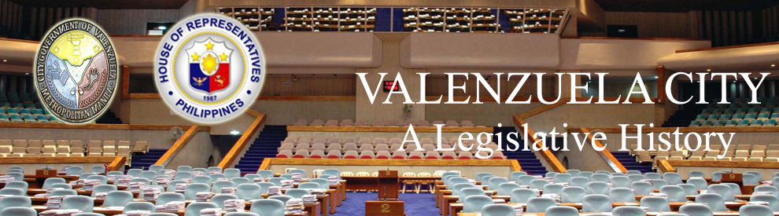

| History |
| Legislators |
| Laws |
| About |
 |
VALENZUELA CITY
The following text/information are lifted from the book of Lee W. Vance entitled Tracing your Philippine Ancestors which was published in Provo, Utah by Stevenson’s Genealogical Center in 1980 and Symbols of the State by the Department of Interior and Local Government of the Republic of the Philippines in 1998.
The area encompassed by the present-day Valenzuela City, Novaliches, and Obando municipality and portions of land in southern Caloocan City were formerly known during Spanish period as Polo. The region is significantly bounded by the Tullahan River on the south and streams of branching Rio Grande de Pampanga on some areas.
Valenzuela City has a land area of 44.59 square kilometers. In 2007, it had a population of 568,928.
Following is a timeline1,2 of events that led to the creation and development of the province of Valenzuela City:
DATE |
EVENT |
|
The Infamous Battle of Bangkusay Channel, Tondo headed by Maynila king Rajah Sulayman, which employed seafarers and warriors from all over parts of the north of Maynila Kingdom and Bulacan, was declared. Sulayman led his troops and attacked the Spaniards in a decisive battle at the town of Bangkusay, but they were defeated, and Sulayman himself was killed. |
|
Legazpi formally established settlement on Maynila. According to Father Martinez de Zuñiga, a Spanish missionary of Augustinian order, Maynila was a vast region enclosed by the towns of Polo, Tambobong (now Malabon City), and mountains of San Mateo in Morong. |
|
Manila became an archdiocese based upon Pope Gregory XIII’s Papal order, regular friars that had already established permanent church in Catanghalan decided that the attached sitio of Polo be divided to cater spiritual needs of an increasing population all over. |
|
Sitio ni Polo became independent from Catanghalan although the two was still under the alcalde (Spanish title for local government during that time) of Bulacan. |
|
The Americans established the military rule and Dr. Pio Valenzuela was appointed first president of the town. |
|
Dr. Pio Valenzuela resigned as the president of the town. |
|
Rufino Valenzuela became the first elected president of the Town. |
|
The Japanese abandoned the town when the combined American and Filipino troops were able to cross the river and take the town. |
|
President Diosdado Macapagal signed Executive Order No. 401, which led to the creation of the separate municipalities of Valenzuela and Polo. |
|
Executive Order No. 46 was signed by then President Diosdado Macapagal declaring the reunification of the towns of Polo and Valenzuela which led to the adoption of the name “Valenzuela” in respect to and to perpetuate the legacy of the great patriot, Dr. Valenzuela. |
|
Pursuant to Presidential Decree No. 824 creating the Metropolitan Manila Commission and separating the Municipality of Valenzuela from the Province of Bulacan. |
|
President Fidel Ramos signed Republic Act No. 8526 converting the Municipality of Valenzuela into a highly urbanized city making Valenzuela the 12th city in Metro Manila and the 83rd in the Philippines. |
|
Valenzuela City constitutes two legislative districts. Listed below are the barangays under each district: |
Sources:
1Vance, L. W. (1980). Tracing your Philippine ancestors. Provo, Utah: Stevenson's Genealogical Center.
2Velasco, C. R. and Untivero, R. G. (1998). Symbols of the State. Manila: National Media Production Center.

Congressional Library Bureau
Legislative Library Service